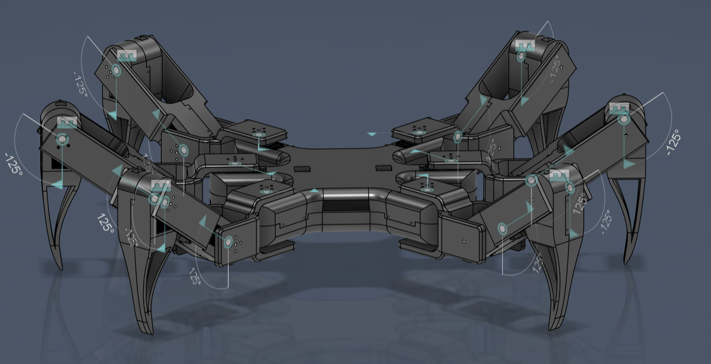
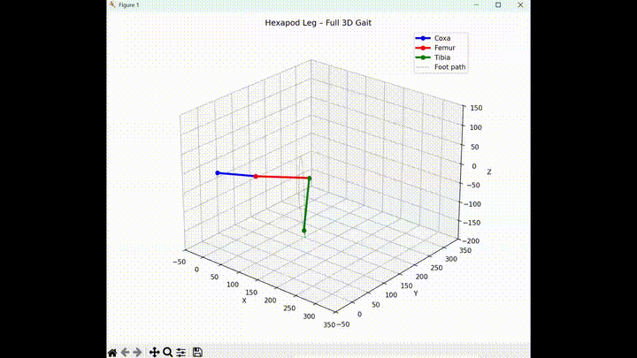

A custom six-legged walking robot that I modeled in Fusion 360 and am currently assembling. This project grew out of an earlier quadruped spider design, but I redesigned the platform as a hexapod to make gait development more stable, modular, and practical.
This project is a multi-legged robotic spider that combines mechanical design, gait planning, and embedded control. I initially began with a quadruped spider concept, but as I worked through walking patterns and support constraints, I realized that moving to a six-legged platform would make locomotion easier to design and more stable in practice.
The current version is a full hexapod redesign modeled in Fusion 360 and now in the assembly stage. My goal is to build a robot whose mechanical design and walking logic are developed together, so the CAD, joint limits, and control strategy all support a realistic gait rather than being solved separately.
The original spider was designed with four legs, but once I started thinking more seriously about foot placement, balance, and sequencing, the tradeoffs became clear. A quadruped can absolutely walk, but it demands tighter control over balance and timing. With six legs, the robot can keep more points of contact on the ground at once, which makes static stability and gait design much more forgiving.
That design change was less about making the robot bigger and more about making it more feasible to control well. Reworking the platform into a hexapod gave me a better foundation for experimenting with gait generation, support polygons, and coordinated servo motion while keeping the robot mechanically symmetric.
I modeled the robot in Fusion 360 with six identical leg modules mounted around a central chassis. The design emphasizes symmetry, reachable leg workspace, and clear joint travel limits so the physical geometry aligns with the motions I want to command in software.
Before assembling the full platform, I worked through the walking problem analytically. I explored point-to-point servo interpolation, smoother foot trajectories, and gait planning ideas for sequencing stance and swing phases. I also simulated leg motion in Python to better understand how each leg should move through a repeatable walking cycle.
A major part of the project has been developing the math behind the motion. I derived forward and inverse kinematics for the leg geometry, thought through leg-specific angle conventions, and planned how multiple servos should move together so each step looks deliberate instead of jerky. That work is guiding both the assembly and the software architecture for the final robot.


The robot is still in progress, and right now the most active part of the project is assembly and iteration. The core CAD direction is established, and the next steps are finishing the mechanical build, wiring and testing the actuators, and translating the gait logic into repeatable motion on the real platform.
I plan to add YouTube demos here showing the earlier quadruped version, walking tests, and ongoing assembly progress for the hexapod redesign.
This project has reinforced how tightly coupled mechanics and control are in robotics. Changing from four legs to six was not just a design preference — it changed the entire control problem and made the gait strategy more achievable. It also forced me to think more rigorously about support, coordination, and what kinds of motion are actually realistic for the hardware.
It has also pushed me to treat CAD as part of the robotics process rather than just packaging. Modeling joint limits, symmetry, and leg placement early made the kinematics work more meaningful, and the math work gave me a much clearer target for what the final assembly needs to do.